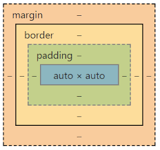

Box models are containers that have multiple elements such as borders, margins, paddings, and the content.
We use these models to carefully plan and design the web layout.
Each element is square-shaped

The margin adds space between 2 or more elements.
Borders are normally set to invisible, but if manipulated to appear. It creates a line on the edges of a block element
Padding adds spaces inside an element. Not to be confused with margins. Paddings are inside a block level element. while margins our outside and between.
The main part of an element. Self explanatory.